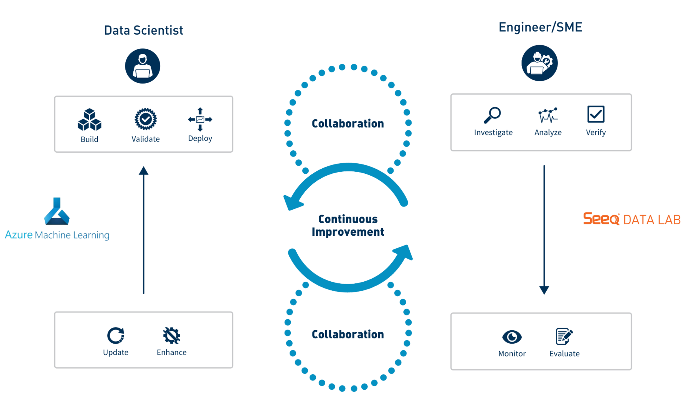
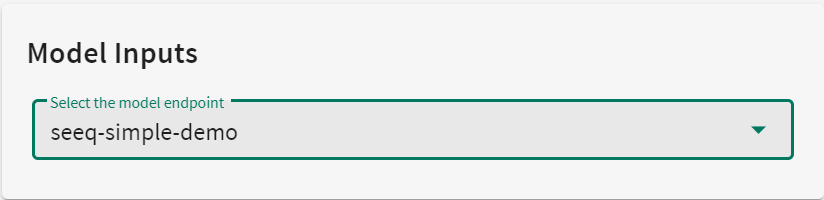
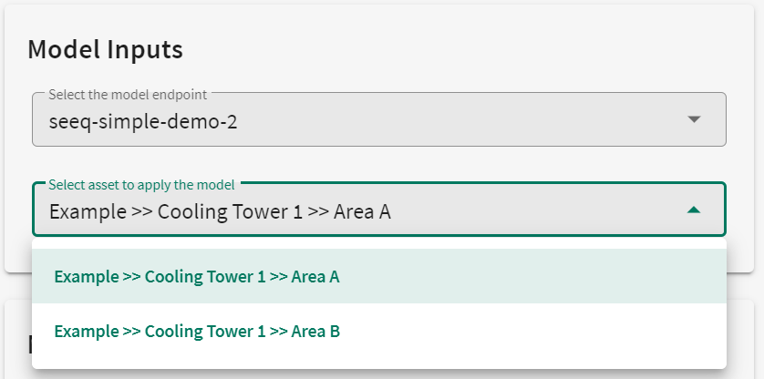
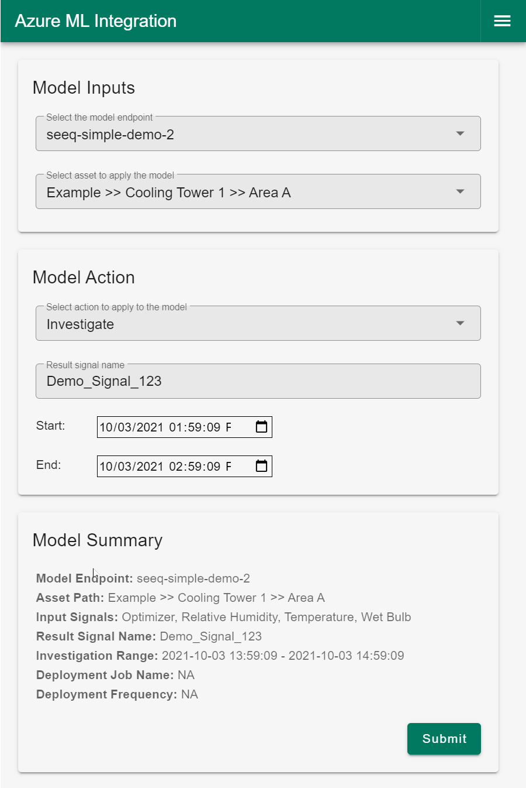
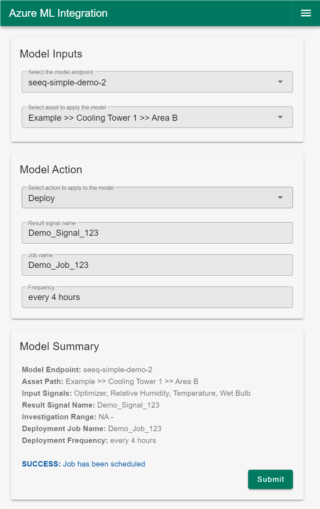
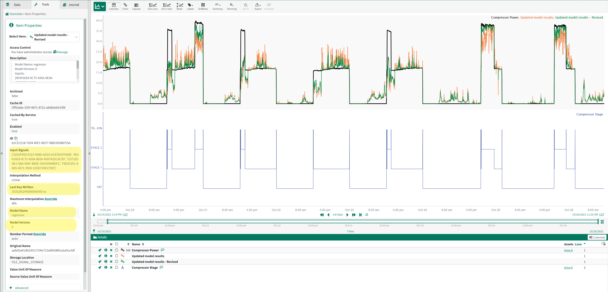

User Guide
Many data scientists are comfortable with Azure ML Studio for machine learning operations and model lifecycle management, but are relatively unfamiliar with manufacturing-specific data and context. Plant and central group engineers in the operational technology (OT) domain lack expertise in ML and are not typically exposed to state-of-the-art solutions like Azure ML Studio. While there has historically been a disconnect between these two groups (IT and OT), a successful ML project requires the active participation and collaboration between both sides - the data scientists in IT and the plant & central group engineers in OT.
|  |
| Figure 1 - Collaborative Workflow between Data Scientists & Plant Engineers |
This Seeq Add-on enables engineers and SMEs in OT to directly interface with models built by data science teams in Azure ML Studio and that have been registered and deployed in an AML endpoint as a cloud service. One way for an engineer or SME to interface with a model is to apply it in an ad-hoc fashion to generate inferences over a historical period of interest, perhaps to validate the model’s accuracy, or to acquire evidence in support of a hypothesis. Alternatively, the engineer or SME may decide that the model is ready for scheduled inference, and bring the model “online” using the Deploy functionality in the Add-on. This Add-on also enables users to scale ML innovations across their organization – models can be evaluated and deployed in real time on many different assets and processes.
Data Scientist Workflow
We assume that a Data Scientist has deployed a registered model through an AML endpoint. A brief summary of the workflow to register a model in AML is shown in the following video.
Data Scientist Workflow
Model Tagging Convention
When registering a model in Azure ML Studio as part of the Data Scientist workflow, several key pieces of information may be attached to the model. One such key piece of information is the tags arguement. Models may be “tagged” in one of two ways, which ultimately determine how the model may be applied. The first convention uses key-value pairs where keys represent the input signals that the model was trained on, in order (e.g. - input1, input2, etc.), and the values for those keys are the corresponding Seeq signal ID’s as shown here:
tags = {
'input1': '4E9416E8-9C75-426A-8E0A-4D07432CAC5D',
'input2': '62E6F850-E523-408D-AD10-0C87E65F996B',
'input3': 'CD732D0B-C3BA-496F-B69E-55543944B5F1',
'input4': 'F8E053D1-A4D5-4671-9969-1D5D7D4F27DD',
}
Selection of an endpoint model with this tag naming convention will NOT provide an option to specify a Seeq asset.
|  |
| Figure 2 - Model Inputs with Tag Naming Convention 1 |
Alternatively, if the model’s tag naming convention uses signal names instead of ID’s as values, then we can leverage the Seeq Asset data structure and apply the model to Assets. The Data Scientist who trained the model will have also added Path tags, specifying the valid Assets on which the model may be applied, as shown here:
tags = {
'input1': 'Relative Humidity',
'input2': 'Optimizer',
'input3': 'Wet Bulb',
'input4': 'Temperature',
'Path1': '2407642C-0169-4ED0-A25C-321E29DC975B',
'Path2': 'AA1E42AE-90BD-4CF7-9449-F8CC81625E8F',
}
Selection of an endpoint model with this tag naming convention WILL provide a drop down menu that will allow you to select the asset on which to apply the model.
|  |
| Figure 3 - Model Inputs with Tag Naming Convention 2 |
Engineer/SME Workflow
A brief description of the Engineering workflow is shown in the following video. Details are also provided in the sections below.
Engineering Workflow
How to Use
The Seeq Add-on is launched from within Seeq Workbench by a user that would like to apply a ML model that has been registered and deployed in a Microsoft Azure endpoint. A streamlined UI takes the user through a few simple setup steps that will result in model inferences pushed back into the same Workbench analysis from which it was launched.
When you open the tool, under the Model Inputs section you will first want to Select the model endpoint that contains the model of interest. Depending on how the model was tagged, you may or may not see a second drop down to Select asset to apply the model.
UI Workflow
Model Inputs
First, select the endpoint containing the model of interest (these would be named by the Data Scientist on the AML side during setup).
Depending on how the model was tagged, optionally select the Asset to apply the model.
Model Action
Select either Investigate to apply the model in an ad-hoc manner, or select Deploy to generate inferences on a regular schedule.
If Investigate, enter a name for ther result signal and specify the Start and End date-time range of the investigation.
If Deploy, enter a name for ther result signal, provide a name for the scheduled Job, and specify the frequency of inferences in the form of a valid cron expression, i.e. - “every 15 minutes”
Confirm that your selections for the model are correect in the Model Summary section at the bottom of the UI.
Click Submit, and done.
Example of Investigate Option
This setup results in a one-time scoring of historical data over a specific time range.
|  |
| Figure 4 - UI example of Investigate (ad-hoc) |
Example of Deploy Option
This setup results in a recurring scheduled application of the model to new incoming data at a specified frequency.
|  |
| Figure 5 - UI example of Deploy (scheduled) |
Output Predictions Pushed into Seeq
Upon submitting an Investigate run, results from the model will immediately be pushed into a new worksheet in the same Seeq Workbench Analysis from which the UI was launched. Upon submitting a Deploy job, inferences from the model will be pushed into the same Seeq Workbench Analysis from which the UI was launched once the amount of time specified in the “Frequency” field has passed, and then every same period thereafter until the job is cancelled.
As an added benefit for traceability and repeatability, predictions come into Seeq carrying metadata that may be used to associate the predictions with the source model. Items such as model name, version, and input signals are just a few pieces of metadata that may be specified as below:
|  |
| Figure 6 - Model Metadata attached to output predictions in Seeq (highlighted in yellow) |